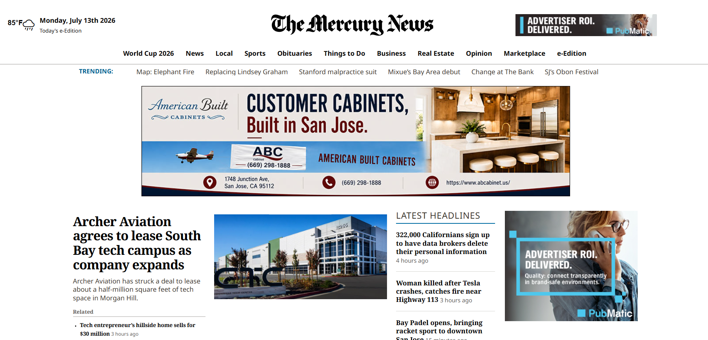
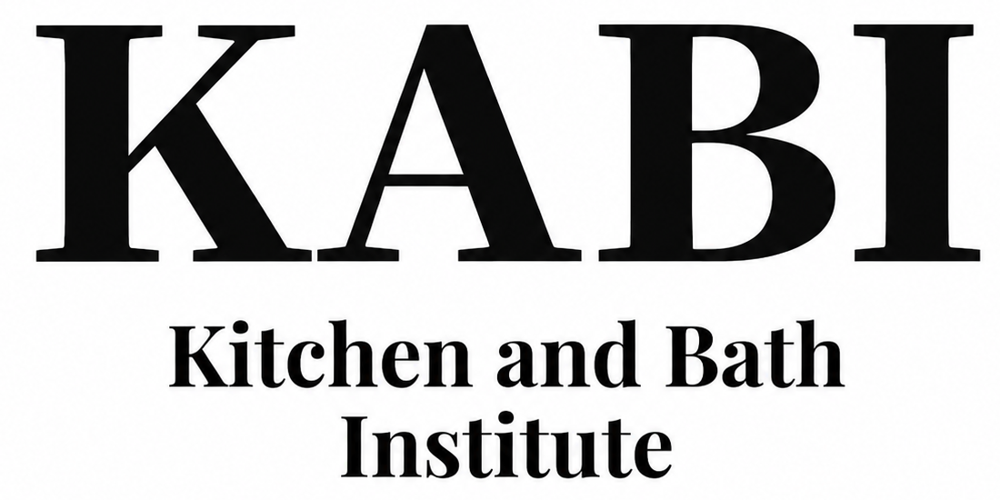
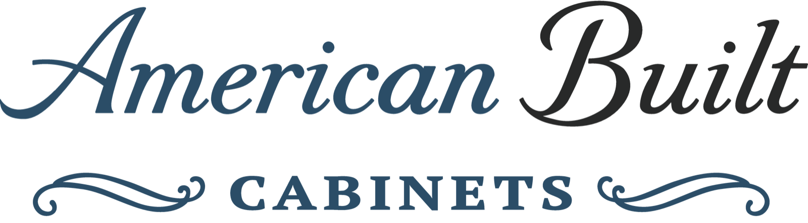
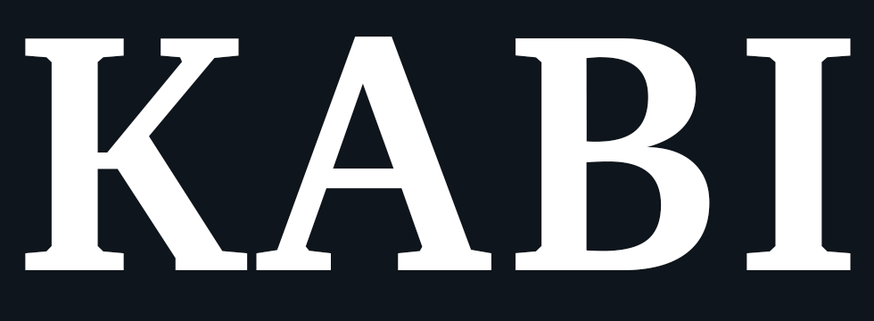
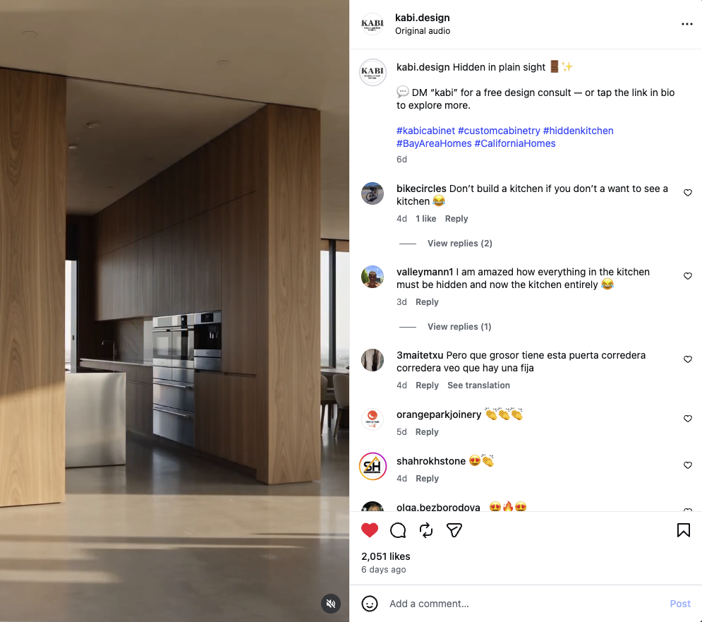
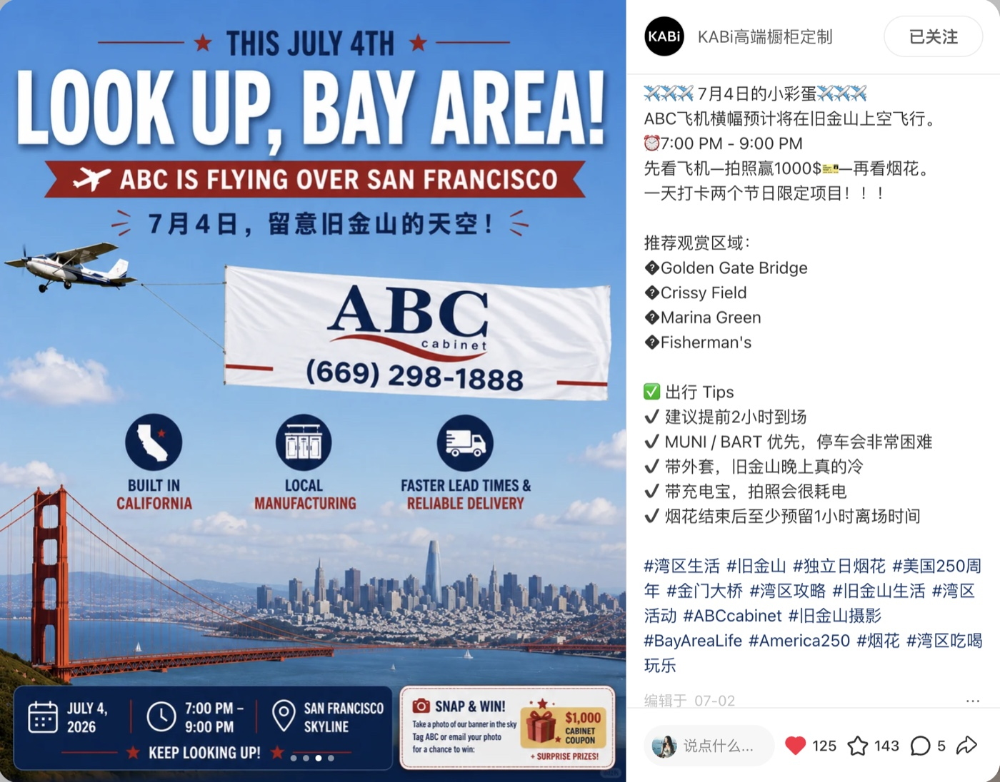

Brand awareness & event RSVP
Use online promotion to introduce the refreshed brand to industry professionals and build interest in the factory Rebranding Day.

The Mercury News · Paid digital campaign
PAID MEDIA90,015Ad impressions
153Clicks
0.17%CTR
Campaign delivery: July 13–31, 2026 · Bay Area News Group report
View delivery report ↗- Goal & audienceBuild awareness of the refreshed brand among general contractors, designers, and other industry professionals
- Campaign messageShowcase the refreshed brand and invite the industry community to experience it in person
- Audience actionMove interested professionals from online discovery to event RSVP and contact capture
- Integrated follow-throughConnect event interest with in-person networking and post-event relationship building
Social media & content
Account operations, creative, organic discovery.
people want to follow.
Always-on account work, with a breakout Reel as one example.
I owned the weekly social cycle: day-to-day publishing, performance reviews, content adjustments, and planning the next week.
Explore social workInstagram accounts currently managed

KABi Design@kabi.designCustom Cabinets · San Jose↗
American Built Cabinets@american.built.cabinet_sanjoseCabinet & Countertop Store · San Jose↗Instagram account metrics shown as captured on October 13, 2026.
Xiaohongshu account currently managed

KABi Custom CabinetryVerified business · United States
Featured Reel · Organic performance NO PAID
from one post
The post generated more than 60× the previous single-post high of 8 shares, helping the Reel reach a wider audience.
View original Instagram post ↗
Featured Xiaohongshu post · Paid campaign PAID PROMOTION
A seasonal brand moment with a local hook.
A Fourth of July post that brought ABC’s local manufacturing and delivery story into a Bay Area moment, with a community photo giveaway.
Promoted as part of the July 4 flight activation. Metrics shown are total post engagement.
Account story
Independently plan and produce marketing content from concept through execution, bringing visual judgment, creative storytelling, and hands-on ownership to day-to-day social media work. Account figures above are profile snapshots; the featured post metrics are shown separately.